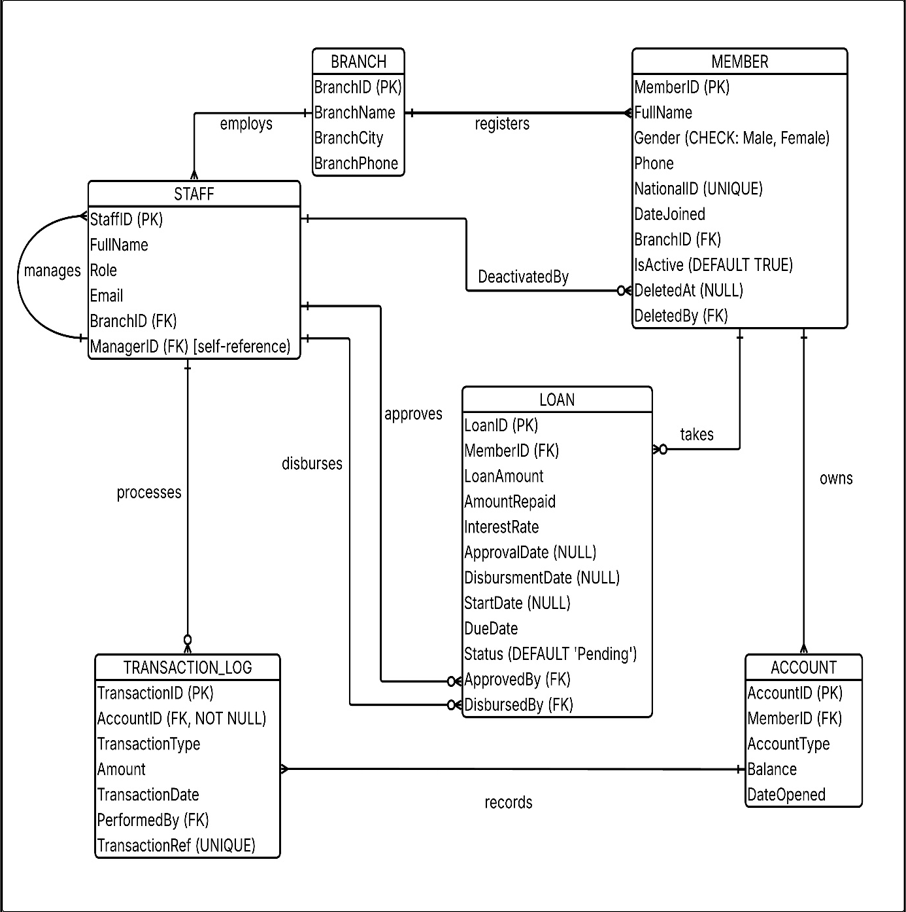
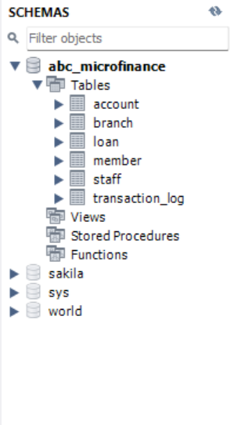
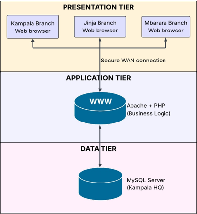
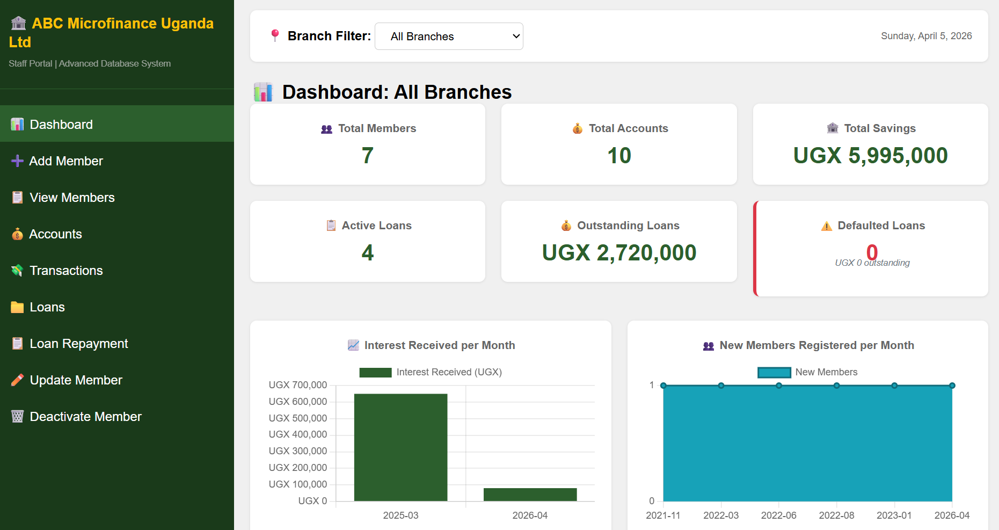
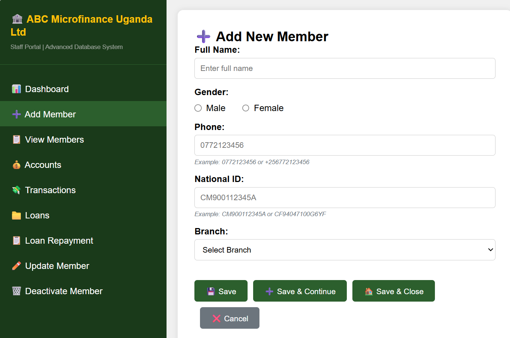
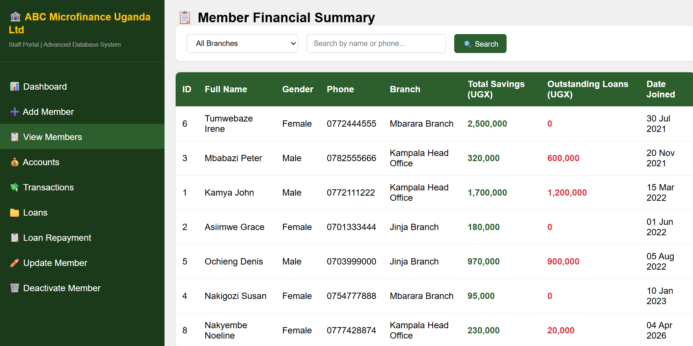
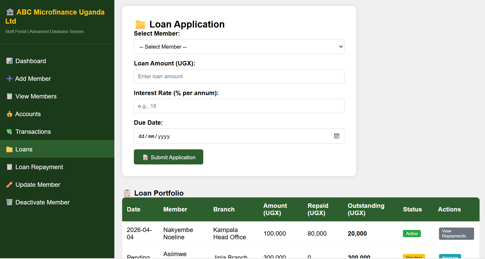
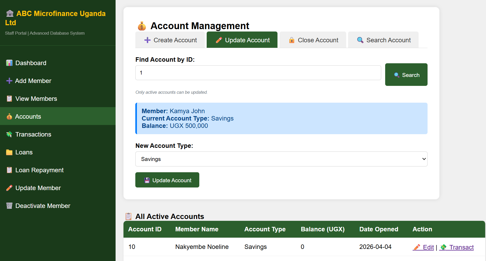
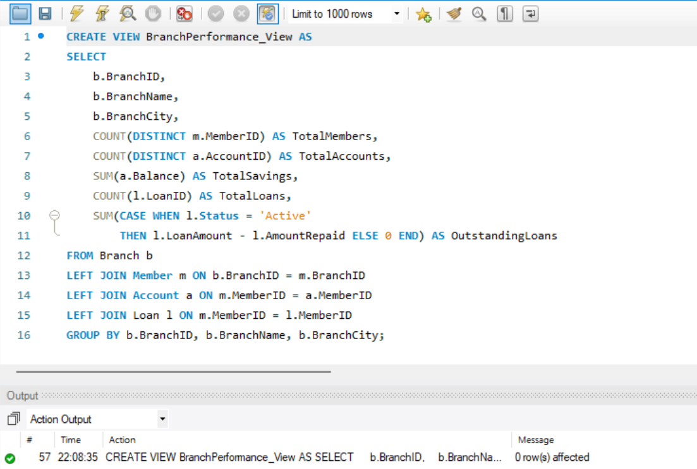
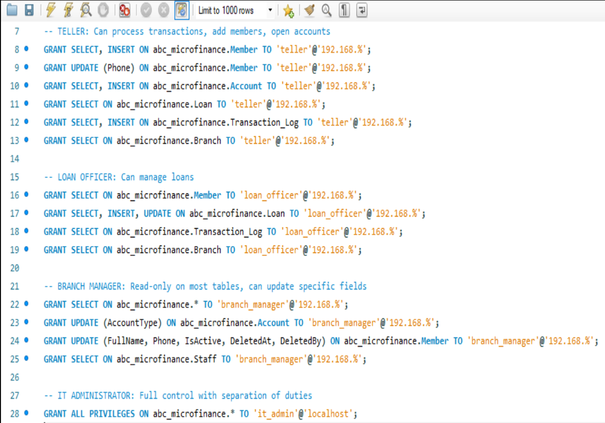

Overview
ABC Microfinance Uganda Ltd is a Tier 3 Microfinance Deposit-taking Institution (MDI) licensed and regulated by the Bank of Uganda under the Microfinance Deposit-taking Institutions Act. The organisation serves over 12,000 registered clients across three offices in Kampala, Jinja, and Mbarara with a staff of 34.
This project designed and implemented a centralised relational database system in MySQL — normalised to Third Normal Form — to replace a fragmented Excel-based records system. A PHP web application provides full CRUD operations for all staff roles without requiring SQL knowledge.
Problem
The organisation managed all client records, loan portfolios, and transaction histories using Microsoft Excel spreadsheets and paper forms — with no shared database or network connection between branches. Staff transferred data manually via USB drives, WhatsApp messages, and email attachments.
Conceptual Design — Entity-Relationship Diagram
Six entities were identified from the requirements analysis: Branch, Staff, Member, Account, Loan, and Transaction_Log. All relationships use one-to-many cardinality. The Staff table includes a recursive self-referencing foreign key (ManagerID) implementing the management hierarchy. The Loan table has two separate foreign keys to Staff — ApprovedBy and DisbursedBy — enforcing segregation of duties.

Logical Design — Database Schema
The schema was implemented in MySQL with tables created in parent-before-child order to satisfy foreign key constraints. Each table includes a primary key with AUTO_INCREMENT, NOT NULL constraints on mandatory fields, UNIQUE constraints to prevent duplicates, and CHECK constraints to enforce business rules.

| Table | Primary Key | Foreign Keys | Key Constraints |
|---|---|---|---|
| Branch | BranchID | None | Parent table — Kampala, Jinja, Mbarara |
| Staff | StaffID | BranchIDManagerID→Staff | Recursive FK — unary management hierarchy. Email UNIQUE |
| Member | MemberID | BranchIDDeletedBy→Staff | NationalID UNIQUE. IsActive BOOLEAN DEFAULT TRUE. Soft delete columns: DeletedAt, DeletedBy |
| Account | AccountID | MemberID | Balance DECIMAL(15,2) DEFAULT 0.00. Savings and Fixed Deposit types |
| Loan | LoanID | MemberIDApprovedBy→StaffDisbursedBy→Staff | CHECK LoanAmount > 0. CHECK InterestRate BETWEEN 0 AND 100. Status DEFAULT 'Pending' |
| Transaction_Log | TransactionID | AccountID NOT NULLPerformedBy→Staff | Weak entity — cannot exist without Account. CHECK Amount > 0. TransactionRef UNIQUE |
Normalization — Excel to 3NF
The starting point was the organisation's flat Excel spreadsheet where member details, branch information, account balances, and loan data were all combined in a single sheet. The schema was normalised through three normal forms.
System Architecture
The application follows a three-tier client-server architecture. All three offices connect to the same application server and database through a secure WAN connection — ensuring every branch always works with the same live data, eliminating the USB drive data transfer problem entirely.

Application Interface — CRUD Operations
The PHP web application provides six main screens covering all CRUD operations. The interface was designed for staff with varying computer literacy — plain language labels, large input fields, no SQL knowledge required. A persistent sidebar provides role-filtered menu access based on the logged-in user's role.





Advanced SQL — Views and Queries
Four views were created to allow staff to query complex data without SQL knowledge. The BranchPerformance_View consolidates member counts, total savings, and outstanding loan balances per branch using a multi-table LEFT JOIN with CASE WHEN aggregate functions.

Security — Role-Based Access Control
Following the principle of least privilege, four database user roles were created with GRANT statements assigning only the permissions each role requires. The GRANT statements were executed in MySQL Workbench and are visible in the screenshot below.

| Role | Key Permissions | Cannot Do |
|---|---|---|
| teller | SELECTINSERT Member, Account, Transaction_Log. UPDATE Phone only | Approve loans, delete members, view staff table |
| loan_officer | SELECTINSERTUPDATE Loan table. SELECT Member, Transaction_Log | Insert members, disburse without approving, delete records |
| branch_manager | SELECT all tables. UPDATE AccountType, Member deactivation fields, Loan approval | Insert transactions, create user accounts, modify financial history |
| it_admin | ALL PRIVILEGES on abc_microfinance (localhost only) | Cannot modify financial data — separation of duties enforced |